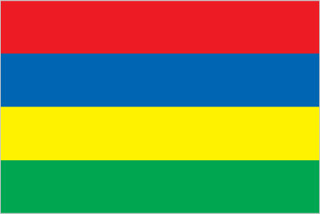
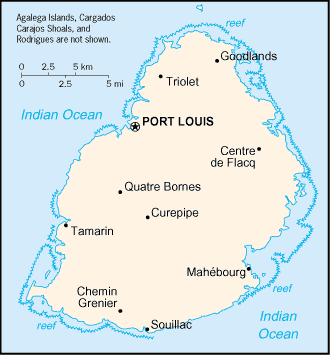

Africa :: MAURITIUS
Introduction :: MAURITIUS
-
Although known to Arab and Malay sailors as early as the 10th century, Mauritius was first explored by the Portuguese in the 16th century and subsequently settled by the Dutch - who named it in honor of Prince Maurits van NASSAU - in the 17th century. The French assumed control in 1715, developing the island into an important naval base overseeing Indian Ocean trade, and establishing a plantation economy of sugar cane. The British captured the island in 1810, during the Napoleonic Wars. Mauritius remained a strategically important British naval base, and later an air station, playing an important role during World War II for anti-submarine and convoy operations, as well as the collection of signals intelligence. Independence from the UK was attained in 1968. A stable democracy with regular free elections and a positive human rights record, the country has attracted considerable foreign investment and has one of Africa's highest per capita incomes.
Geography :: MAURITIUS
-
Southern Africa, island in the Indian Ocean, about 800 km (500 mi) east of Madagascar20 17 S, 57 33 EAfricatotal: 2,040 sq kmland: 2,030 sq kmwater: 10 sq kmnote: includes Agalega Islands, Cargados Carajos Shoals (Saint Brandon), and Rodriguescountry comparison to the world: 181almost 11 times the size of Washington, DC0 km177 kmmeasured from claimed archipelagic straight baselinesterritorial sea: 12 nmexclusive economic zone: 200 nmcontinental shelf: 200 nm or to the edge of the continental margintropical, modified by southeast trade winds; warm, dry winter (May to November); hot, wet, humid summer (November to May)small coastal plain rising to discontinuous mountains encircling central plateaumean elevation: NAelevation extremes: lowest point: Indian Ocean 0 mhighest point: Mont Piton 828 marable land, fishagricultural land: 43.8%arable land 38.4%; permanent crops 2%; permanent pasture 3.4%forest: 17.3%other: 38.9% (2011 est.)190 sq km (2012)population density is one of the highest in the world; urban cluster are found throught the main island, with a greater density in and around Port Luis; population on Rodrigues Island is spread across the island with a slightly denser cluster on the north coastcyclones (November to April); almost completely surrounded by reefs that may pose maritime hazardswater pollution, degradation of coral reefsparty to: Antarctic-Marine Living Resources, Biodiversity, Climate Change, Climate Change-Kyoto Protocol, Desertification, Endangered Species, Environmental Modification, Hazardous Wastes, Law of the Sea, Marine Life Conservation, Ozone Layer Protection, Ship Pollution, Wetlandssigned, but not ratified: none of the selected agreementsthe main island, from which the country derives its name, is of volcanic origin and is almost entirely surrounded by coral reefs; former home of the dodo, a large flightless bird related to pigeons, driven to extinction by the end of the 17th century through a combination of hunting and the introduction of predatory species
People and Society :: MAURITIUS
-
1,356,388 (July 2017 est.)country comparison to the world: 156noun: Mauritian(s)adjective: MauritianIndo-Mauritian (compose approximately two thirds of the total population), Creole, Sino-Mauritian, Franco-Mauritiannote: Mauritius has not had a question on ethnicity on its national census since 1972Creole 86.5%, Bhojpuri 5.3%, French 4.1%, two languages 1.4%, other 2.6% (includes English, the official language of the National Assembly, which is spoken by less than 1% of the population), unspecified 0.1% (2011 est.)Hindu 48.5%, Roman Catholic 26.3%, Muslim 17.3%, other Christian 6.4%, other 0.6%, none 0.7%, unspecified 0.1% (2011 est.)Mauritius has transitioned from a country of high fertility and high mortality rates in the 1950s and mid-1960s to one with among the lowest population growth rates in the developing world today. After World War II, Mauritius’ population began to expand quickly due to increased fertility and a dramatic drop in mortality rates as a result of improved health care and the eradication of malaria. This period of heightened population growth – reaching about 3% a year – was followed by one of the world’s most rapid birth rate declines.The total fertility rate fell from 6.2 children per women in 1963 to 3.2 in 1972 – largely the result of improved educational attainment, especially among young women, accompanied by later marriage and the adoption of family planning methods. The family planning programs’ success was due to support from the government and eventually the traditionally pronatalist religious communities, which both recognized that controlling population growth was necessary because of Mauritius’ small size and limited resources. Mauritius’ fertility rate has consistently been below replacement level since the late 1990s, a rate that is substantially lower than nearby countries in southern Africa.With no indigenous population, Mauritius’ ethnic mix is a product of more than two centuries of European colonialism and continued international labor migration. Sugar production relied on slave labor mainly from Madagascar, Mozambique, and East Africa from the early 18th century until its abolition in 1835, when slaves were replaced with indentured Indians. Most of the influx of indentured labor – peaking between the late 1830s and early 1860 – settled permanently creating massive population growth of more than 7% a year and reshaping the island’s social and cultural composition. While Indians represented about 12% of Mauritius’ population in 1837, they and their descendants accounted for roughly two-thirds by the end of the 19th century. Most were Hindus, but the majority of the free Indian traders were Muslims.Mauritius again turned to overseas labor when its success in clothing and textile exports led to a labor shortage in the mid-1980s. Clothing manufacturers brought in contract workers (increasingly women) from China, India, and, to a lesser extent Bangladesh and Madagascar, who worked longer hours for lower wages under poor conditions and were viewed as more productive than locals. Downturns in the sugar and textile industries in the mid-2000s and a lack of highly qualified domestic workers for Mauritius’ growing services sector led to the emigration of low-skilled workers and a reliance on skilled foreign labor. Since 2007, Mauritius has pursued a circular migration program to enable citizens to acquire new skills and savings abroad and then return home to start businesses and to invest in the country’s development.0-14 years: 20.16% (male 139,721/female 133,765)15-24 years: 14.8% (male 101,453/female 99,288)25-54 years: 43.74% (male 296,795/female 296,485)55-64 years: 11.59% (male 74,650/female 82,585)65 years and over: 9.71% (male 53,985/female 77,661) (2017 est.)total dependency ratio: 41.6youth dependency ratio: 27.5elderly dependency ratio: 14.1potential support ratio: 7.1 (2015 est.)total: 35.3 yearsmale: 34.2 yearsfemale: 36.3 years (2017 est.)country comparison to the world: 770.59% (2017 est.)country comparison to the world: 14813 births/1,000 population (2017 est.)country comparison to the world: 1537.1 deaths/1,000 population (2017 est.)country comparison to the world: 1270 migrant(s)/1,000 population (2017 est.)country comparison to the world: 91population density is one of the highest in the world; urban cluster are found throught the main island, with a greater density in and around Port Luis; population on Rodrigues Island is spread across the island with a slightly denser cluster on the north coasturban population: 39.4% of total population (2017)rate of urbanization: 0.07% annual rate of change (2015-20 est.)PORT LOUIS (capital) 135,000 (2014)at birth: 1.05 male(s)/female0-14 years: 1.04 male(s)/female15-24 years: 1.02 male(s)/female25-54 years: 1 male(s)/female55-64 years: 0.9 male(s)/female65 years and over: 0.68 male(s)/femaletotal population: 0.97 male(s)/female (2016 est.)53 deaths/100,000 live births (2015 est.)country comparison to the world: 93total: 9.8 deaths/1,000 live birthsmale: 11.6 deaths/1,000 live birthsfemale: 7.9 deaths/1,000 live births (2017 est.)country comparison to the world: 140total population: 75.8 yearsmale: 72.4 yearsfemale: 79.5 years (2017 est.)country comparison to the world: 981.75 children born/woman (2017 est.)country comparison to the world: 16063.8% (2014)4.8% of GDP (2014)country comparison to the world: 1481.93 physicians/1,000 population (2014)3.4 beds/1,000 population (2011)improved:urban: 99.9% of populationrural: 99.8% of populationtotal: 99.9% of populationunimproved:urban: 0.1% of populationrural: 0.2% of populationtotal: 0.1% of population (2015 est.)improved:urban: 93.9% of populationrural: 92.6% of populationtotal: 93.1% of populationunimproved:urban: 6.1% of populationrural: 7.4% of populationtotal: 6.9% of population (2015 est.)NANANA10.8% (2016)country comparison to the world: 1375% of GDP (2015)country comparison to the world: 123definition: age 15 and over can read and writetotal population: 92.7%male: 94.9%female: 90.7% (2015 est.)total: 15 yearsmale: 14 yearsfemale: 15 years (2015)total: 26.3%male: 21.6%female: 32.7% (2015 est.)country comparison to the world: 41
Government :: MAURITIUS
-
conventional long form: Republic of Mauritiusconventional short form: Mauritiuslocal long form: Republic of Mauritiuslocal short form: Mauritiusetymology: island named after Prince Maurice VAN NASSAU, stadtholder of the Dutch Republic, in 1598parliamentary republicname: Port Louisgeographic coordinates: 20 09 S, 57 29 Etime difference: UTC+4 (9 hours ahead of Washington, DC, during Standard Time)9 districts and 3 dependencies*; Agalega Islands*, Black River, Cargados Carajos Shoals*, Flacq, Grand Port, Moka, Pamplemousses, Plaines Wilhems, Port Louis, Riviere du Rempart, Rodrigues*, Savanne12 March 1968 (from the UK)Independence and Republic Day, 12 March (1968 & 1992); note - became independent and a republic on the same date in 1968 and 1992 respectivelyhistory: several previous; latest adopted 12 March 1968amendments: proposed by the National Assembly; passage of amendments affecting constitutional articles including the sovereignty of the state, fundamental rights and freedoms, citizenship, or the branches of government requires approval in a referendum by at least three-fourths majority of voters followed by a unanimous vote by the Assembly; passage of other amendments requires only two-thirds majority vote by the Assembly; amended many times, last in 2016 (2017)civil legal system based on French civil law with some elements of English common lawaccepts compulsory ICJ jurisdiction with reservations; accepts ICCt jurisdictioncitizenship by birth: yescitizenship by descent: yesdual citizenship recognized: yesresidency requirement for naturalization: 5 out of the previous 7 years including the last 12 months18 years of age; universalchief of state: President Ameenah GURIB-FAKIM (since 5 June 2015); Vice President Paramaslyum (aka Barlen) Pillay VYAPOORY (since 4 April 2016)head of government: Prime Minister Pravind JUGNAUTH (since 23 January 2017); note - Prime Minister Sir Anerood JUGNAUTH (since 17 December 2014) stepped down on 23 January 2017 in favor of his son, Pravind Kumar JUGNAUTH who was then appointed prime ministercabinet: Cabinet of Ministers (Council of Ministers) appointed by the president on the recommendation of the prime ministerelections/appointments: president and vice president indirectly elected by the National Assembly for 5-year renewable terms; election last held on 4 June 2015 (next to be held in 2020); prime minister and deputy prime minister appointed by the president, responsible to the National Assemblyelection results: Ameenah GURIB-FAKIM (independent) elected president by the National Assembly - unanimous votedescription: unicameral National Assembly or Assemblee Nationale (70 seats maximum; 62 members directly elected in single- and multi-seat constituencies by simple majority vote and up to 8 seats allocated to non-elected party candidates by the Electoral Commissioner's Office; members serve a 5-year term)elections: last held on 10 December 2014 following dissolution of the Assembly on 6 October 2014 (next to be held by 2019)election results: percent of vote by party - Alliance Lepep 49.8%, PTR-MMM 38.5%, FSM 2.1%, OPR 1.1%, other 8.5%; elected seats by party - Alliance Lepep 47, PTR-MMM 13, OPR 2; appointed seats Alliance Lepep 4, PTR-MMM 3highest court(s): Supreme Court of Mauritius (consists of the chief justice, a senior puisne judge, and 17 puisne judges); note - the Judicial Committee of the Privy Council (in London) serves as the final court of appealjudge selection and term of office: chief justice appointed by the president after consultation with the prime minister; senior puisne judge appointed by the president with the advice of the chief justice; other puisne judges appointed by the president with the advice of the Judicial and Legal Commission, a 4-member body of judicial officials including the chief justice; all judges serve until retirement at age 67subordinate courts: lower regional courts known as District Courts, Court of Civil Appeal; Court of Criminal Appeal; Public Bodies Appeal TribunalAlliance Lepep (Alliance of the People) [Pravind JUGNAUTH] (coalition including MSM, PMSD, and ML)Labor Party (Parti Travailliste) or PTR or MLP [Navinchandra RAMGOOLAM]Mauritian Militant Movement (Mouvement Militant Mauricien) or MMM [Paul BERENGER]Mauritian Social Democratic Party (Parti Mauricien Social Democrate) or PMSD [Xavier Luc DUVAL]Mauritian Solidarity Front (Front Solidarite Mauricienne) or FSM [Cehl FAKEERMEEAH, known as Cehl MEEAH]Militant Socialist Movement (Mouvement Socialist Mauricien) or MSM [Pravind JUGNAUTH]Muvman Liberater or ML [Ivan COLLENDAVELLOO]Rodrigues Peoples Organization (Organisation du Peuple Rodriguais) or OPR [Serge CLAIR]Lalit Political PartyResistance and Alternative (Rezistans ek Alternativ)Say No to Coal!other: various labor unionsACP, AfDB, AOSIS, AU, C, CD, COMESA, CPLP (associate), FAO, G-77, IAEA, IBRD, ICAO, ICC (NGOs), ICCt, ICRM, IDA, IFAD, IFC, IFRCS, IHO, ILO, IMF, IMO, IMSO, InOC, Interpol, IOC, IOM, IPU, ISO, ITSO, ITU, ITUC (NGOs), MIGA, NAM, OIF, OPCW, PCA, SAARC (observer), SADC, UN, UNCTAD, UNESCO, UNIDO, UNWTO, UPU, WCO, WFTU (NGOs), WHO, WIPO, WMO, WTOchief of mission: Ambassador Sooroojdev PHOKEER (since 3 August 2015)chancery: 1709 N Street NW, Washington, DC 20036; administrative offices at 3201 Connecticut Avenue NW, Suite 441, Washington, DC 20036telephone: [1] (202) 244-1491 through 1492FAX: [1] (202) 966-0983chief of mission: Ambassador (vacant); Charge d'Affaires Melanie ZIMMERMAN (since 2016); note - also accredited to Seychellesembassy: 4th Floor, Rogers House, John Kennedy Avenue, Port Louismailing address: international mail: P.O. Box 544, Port Louis; US mail: American Embassy, Port Louis, US Department of State, Washington, DC 20521-2450telephone: [230] 202-4400FAX: [230] 208-9534four equal horizontal bands of red (top), blue, yellow, and green; red represents self-determination and independence, blue the Indian Ocean surrounding the island, yellow has been interpreted as the new light of independence, golden sunshine, or the bright future, and green can symbolize either agriculture or the lush vegetation of the islanddodo bird, Trochetia Boutoniana flower; national colors: red, blue, yellow, greenname: "Motherland"lyrics/music: Jean Georges PROSPER/Philippe GENTILnote: adopted 1968
Economy :: MAURITIUS
-
Since independence in 1968, Mauritius has undergone a remarkable economic transformation from a low-income, agriculturally based economy to a diversified, upper middle-income economy with growing industrial, financial, and tourist sectors. Mauritius has achieved steady growth over the last several decades, resulting in more equitable income distribution, increased life expectancy, lowered infant mortality, and a much-improved infrastructure.The economy currently depends on sugar, tourism, textiles and apparel, and financial services, but is expanding into fish processing, information and communications technology, and hospitality and property development. Sugarcane is grown on about 90% of the cultivated land area and accounts for 15% of export earnings. The government's development strategy centers on creating vertical and horizontal clusters of development in these sectors. Mauritius has attracted more than 32,000 offshore entities, many aimed at commerce in India, South Africa, and China. Investment in the banking sector alone has reached over $1 billion. Mauritius’ textile sector has taken advantage of the Africa Growth and Opportunity Act, a preferential trade program that allows duty free access to the US market, with Mauritian exports to the US growing by 40% from 2000 to 2014.Mauritius' sound economic policies and prudent banking practices helped mitigate negative effects of the global financial crisis in 2008-09. GDP grew in the 3-4% per year range in 2010-16, and the country continues to expand its trade and investment outreach around the globe. Growth in the US and Europe fostered goods and services exports, including tourism, while lower oil prices kept inflation low in 2016. Mauritius continues to rank first in sub-Saharan Africa on the World Bank’s Doing Business Report.$25.96 billion (2016 est.)$24.67 billion (2015 est.)$23.58 billion (2014 est.)note: data are in 2016 dollarscountry comparison to the world: 137$12.15 billion (2016 est.)3.9% (2016 est.)3.5% (2015 est.)3.6% (2014 est.)country comparison to the world: 78$20,500 (2016 est.)$19,800 (2015 est.)$19,100 (2014 est.)note: data are in 2016 dollarscountry comparison to the world: 8516.3% of GDP (2016 est.)16.3% of GDP (2015 est.)17% of GDP (2014 est.)country comparison to the world: 128household consumption: 73.6%government consumption: 15.4%investment in fixed capital: 17.3%investment in inventories: 3.1%exports of goods and services: 44.5%imports of goods and services: -53.9% (2016 est.)agriculture: 4.1%industry: 21.9%services: 74% (2016 est.)sugarcane, tea, corn, potatoes, bananas, pulses; cattle, goats; fishfood processing (largely sugar milling), textiles, clothing, mining, chemicals, metal products, transport equipment, nonelectrical machinery, tourism3.2% (2016 est.)country comparison to the world: 78623,300 (2016 est.)country comparison to the world: 155agriculture and fishing: 8%construction and industry: 29.8%transportation and communication: 63.5%trade, restaurants, hotels: 22%finance: 6%other services: 25% (2014 est.)7.2% (2016 est.)7.9% (2015 est.)country comparison to the world: 948% (2006 est.)lowest 10%: NA%highest 10%: NA%35.9 (2012 est.)39 (2006 est.)country comparison to the world: 91revenues: $2.539 billionexpenditures: $2.854 billion (2016 est.)21.2% of GDP (2016 est.)country comparison to the world: 140-2.6% of GDP (2016 est.)country comparison to the world: 10865% of GDP (2016 est.)62.7% of GDP (2015 est.)country comparison to the world: 611 July - 30 June1% (2016 est.)1.3% (2015 est.)country comparison to the world: 909% (31 December 2010)country comparison to the world: 338.5% (31 December 2016 est.)8.5% (31 December 2015 est.)country comparison to the world: 98$2.833 billion (31 December 2016 est.)$2.547 billion (31 December 2015 est.)country comparison to the world: 118$13.27 billion (31 December 2016 est.)$12.2 billion (31 December 2015 est.)country comparison to the world: 99$13.7 billion (31 December 2016 est.)$13.28 billion (31 December 2015 est.)country comparison to the world: 98$7.239 billion (31 December 2015 est.)$8.751 billion (31 December 2014 est.)$8.942 billion (31 December 2013 est.)country comparison to the world: 78$-531 million (2016 est.)$-586 million (2015 est.)country comparison to the world: 101$2.359 billion (2016 est.)$2.662 billion (2015 est.)country comparison to the world: 134clothing and textiles, sugar, cut flowers, molasses, fish, primates (for research)France 14.8%, UK 12%, US 11.4%, South Africa 8.2%, Madagascar 7.3%, Italy 6.8%, Spain 4.5% (2016)$4.408 billion (2016 est.)$4.524 billion (2015 est.)country comparison to the world: 126manufactured goods, capital equipment, foodstuffs, petroleum products, chemicalsChina 17.7%, India 16.5%, France 7.8%, South Africa 7.5% (2016)$4.967 billion (31 December 2016 est.)$4.26 billion (31 December 2015 est.)country comparison to the world: 92$14.34 billion (31 December 2016 est.)$14.64 billion (31 December 2015 est.)country comparison to the world: 102NA$NAMauritian rupees (MUR) per US dollar -35.542 (2016 est.)35.542 (2015 est.)35.057 (2014 est.)30.622 (2013 est.)30.05 (2012 est.)
Energy :: MAURITIUS
-
electrification - total population: 100% (2016)2.857 billion kWh (2015 est.)country comparison to the world: 1342.68 billion kWh (2015 est.)country comparison to the world: 1390 kWh (2016 est.)country comparison to the world: 1690 kWh (2016 est.)country comparison to the world: 1741.056 million kW (2015 est.)country comparison to the world: 12766.3% of total installed capacity (2015 est.)country comparison to the world: 1140% of total installed capacity (2015 est.)country comparison to the world: 1435.8% of total installed capacity (2015 est.)country comparison to the world: 12829.4% of total installed capacity (2015 est.)country comparison to the world: 170 bbl/day (2016 est.)country comparison to the world: 1710 bbl/day (2014 est.)country comparison to the world: 1640 bbl/day (2014 est.)country comparison to the world: 1620 bbl (1 January 2017 es)country comparison to the world: 1690 bbl/day (2014 est.)country comparison to the world: 17526,000 bbl/day (2015 est.)country comparison to the world: 1280 bbl/day (2014 est.)country comparison to the world: 18024,790 bbl/day (2014 est.)country comparison to the world: 1070 cu m (2013 est.)country comparison to the world: 1700 cu m (2013 est.)country comparison to the world: 2090 cu m (2013 est.)country comparison to the world: 1510 cu m (2013 est.)country comparison to the world: 1560 cu m (1 January 2014 es)country comparison to the world: 1735.4 million Mt (2013 est.)country comparison to the world: 124
Communications :: MAURITIUS
-
total subscriptions: 385,500subscriptions per 100 inhabitants: 29 (July 2016 est.)country comparison to the world: 110total: 1.814 millionsubscriptions per 100 inhabitants: 135 (July 2016 est.)country comparison to the world: 153general assessment: small system with good servicedomestic: monopoly over fixed-line services terminated in 2005; fixed-line teledensity roughly 30 per 100 persons; mobile-cellular services launched in 1989 with teledensity approaching 135 per 100 persons in 2016international: country code - 230; landing point for the SAFE submarine cable that provides links to Asia and South Africa where it connects to the SAT-3/WASC submarine cable that provides further links to parts of East Africa, and Europe; satellite earth station - 1 Intelsat (Indian Ocean); new microwave link to Reunion; HF radiotelephone links to several countries (2016)the government maintains control over TV broadcasting through the Mauritius Broadcasting Corporation (MBC), which only operates digital TV stations since June 2015; MBC is a shareholder in a local company that operates 2 pay-TV stations; the state retains the largest radio broadcast network with multiple stations; several private radio broadcasters have entered the market since 2001; transmissions of at least 2 international broadcasters are available (2017).mutotal: 717,618percent of population: 53.2% (July 2016 est.)country comparison to the world: 175
Transportation :: MAURITIUS
-
number of registered air carriers: 1inventory of registered aircraft operated by air carriers: 13annual passenger traffic on registered air carriers: 1,466,527annual freight traffic on registered air carriers: 168.773 million mt-km (2015)3B (2016)5 (2013)country comparison to the world: 182total: 2over 3,047 m: 1914 to 1,523 m: 1 (2017)total: 3914 to 1,523 m: 2under 914 m: 1 (2013)total: 2,428 kmpaved: 2,379 km (includes 99 km of expressways)unpaved: 49 km (2015)country comparison to the world: 173total: 4by type: passenger/cargo 2, petroleum tanker 1, refrigerated cargo 1 (2010)country comparison to the world: 133major seaport(s): Port Louis
Military and Security :: MAURITIUS
-
0.19% of GDP (2016)0.18% of GDP (2015)0.15% of GDP (2014)0.19% of GDP (2013)0.14% of GDP (2012)country comparison to the world: 130no regular military forces; Mauritius Police Force, Special Mobile Force, National Coast Guard (2014)
Transnational Issues :: MAURITIUS
-
Mauritius and Seychelles claim the Chagos Islands; claims French-administered Tromelin Islandcurrent situation: Mauritius is a source, transit, and destination country for men, women, and children subjected to forced labor and sex trafficking; Mauritian girls are induced or sold into prostitution, often by peers, family members, or businessmen offering other forms of employment; Mauritian adults have been identified as labor trafficking victims in the UK, Belgium, and Canada, while Mauritian women from Rodrigues Island are also subject to domestic servitude in Mauritius; Malagasy women transit Mauritius en route to the Middle East for jobs as domestic servants and subsequently are subjected to forced labor; Cambodian men are victims of forced labor on foreign fishing vessels in Mauritius’ territorial waters; other migrant workers from East and South Asia and Madagascar are also subject to forced labor in Mauritius’ manufacturing and construction sectorstier rating: Tier 2 Watch List – Mauritius does not fully comply with the minimum standards for the elimination of trafficking; however, it is making significant efforts to do so; in 2014, the government made modest efforts to address child sex trafficking but none related to adult forced labor; law enforcement lacks an understanding of trafficking crimes outside of child sex trafficking, despite increasing evidence of other forms of human trafficking; authorities made no trafficking prosecutions or convictions and made modest efforts to assist a couple of child sex trafficking victims; officials sustained an extensive public awareness campaign to prevent child sex trafficking, but no efforts were made to raise awareness or reduce demand for forced adult or child labor (2015)consumer and transshipment point for heroin from South Asia; small amounts of cannabis produced and consumed locally; significant offshore financial industry creates potential for money laundering, but corruption levels are relatively low and the government appears generally to be committed to regulating its banking industry